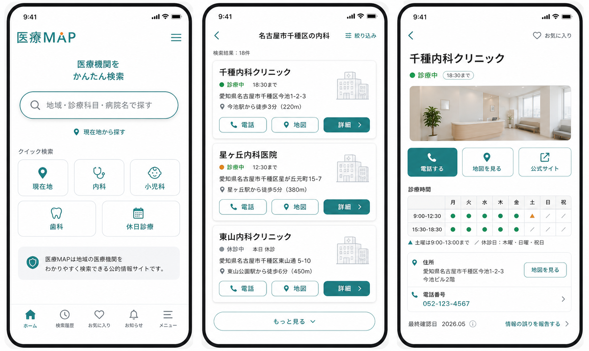

最終確認日を表示
口コミ点数だけでなく、情報がいつ確認されたかを見せます。
Googleマップではなく、受診先を決めるための地域医療ナビ
診療科目、地域、現在地、休日診療をひとつの画面に整理。電話・地図・診療時間まで迷わず進めるシンプルなWebアプリ案です。
口コミ点数だけでなく、情報がいつ確認されたかを見せます。
迷っている人がすぐ連絡できるように、主要操作を固定します。
地域の紙媒体・現地確認の強みをWebアプリに引き継ぎます。
検索結果
85件中、サンプル3件を表示。カードごとに電話・地図・詳細へ進めます。
施設詳細
基本情報、診療時間、確認日、修正依頼を1画面に整理します。
デザイン方向性
トップは検索、結果はカード、詳細は診療時間と電話導線を優先します。
